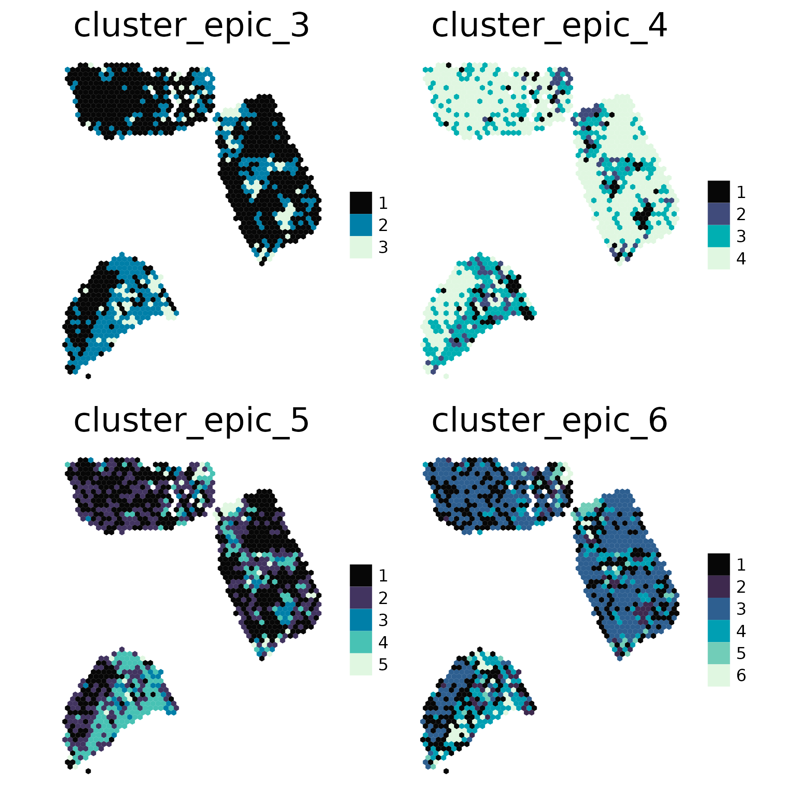
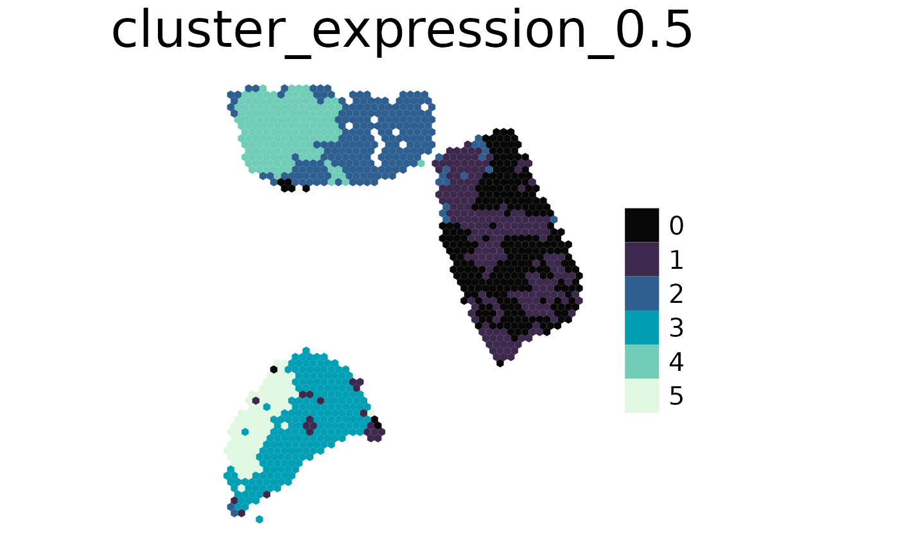

Clustering
spacedeconv_clustering.RmdTo gain more insights into a tissues composition the clustering function can be applied. It is possible to cluster by expression values, deconvolution results or pathway and transcription factor activities.
library(spacedeconv)
#> The legacy packages maptools, rgdal, and rgeos, underpinning the sp package,
#> which was just loaded, will retire in October 2023.
#> Please refer to R-spatial evolution reports for details, especially
#> https://r-spatial.org/r/2023/05/15/evolution4.html.
#> It may be desirable to make the sf package available;
#> package maintainers should consider adding sf to Suggests:.
#> The sp package is now running under evolution status 2
#> (status 2 uses the sf package in place of rgdal)
#> Configuring package 'spacedeconv': please wait ...
#> Done!
data("spatial_data_3")
spe <- preprocess(spatial_data_3)
#> ── spacedeconv ─────────────────────────────────────────────────────────────────
#> ℹ testing parameter
#> ✔ parameter OK [85ms]
#>
#> ℹ Removing 137 observations with umi count below threshold
#> ✔ Removed 137 observations with umi count below threshold [1.2s]
#>
#> ℹ Removing 13049 variables with all zero expression
#> ✔ Removed 13049 variables with all zero expression [23ms]
#>
spe <- normalize(spe, method = "cpm")
#> ── spacedeconv ─────────────────────────────────────────────────────────────────
#> ℹ testing parameter
#> ✔ parameter OK [28ms]
#>
#> ℹ Normalizing using cpm
#> ✔ Finished normalization using cpm [2.6s]
#>
#> ℹ Please note the normalization is stored in an additional assay
deconv <- deconvolute(spe, method = "epic", assay_sc = "cpm")
#> ── spacedeconv ─────────────────────────────────────────────────────────────────
#> ℹ testing parameter
#> ✔ parameter OK [37ms]
#>
#>
#>
#> ── Spatial
#> Assays: "counts" and "cpm"
#> Genes: 23542
#> → without expression: 0 (0%)
#> Spots: 1185
#> Spots under tissue: 1185 (100%)
#> Median Genes Per Spot: 4174
#> → without expression: 0 (0%)
#> Umi count range: 517 - 61586
#> Spots with UMI count below 500: 0 (0%)
#> ✔ Rownames set
#> ✔ Colnames set
#> ℹ deconvoluting
#> Loading required package: EPIC
#>
#> >>> Running epic
#> Warning in cor(x, y): the standard deviation is zero
#> Warning in (function (bulk, reference = NULL, mRNA_cell = NULL, mRNA_cell_sub = NULL, : The optimization didn't fully converge for some samples:
#> AAATTTGCGGGTGTGG-1; AACCCTGGTGGAACCA-1; AAGCGTCCCTCATCGA-1; AAGGTGATAAACCAGC-1; AATAGTCCGTCCCGAC-1; AATGAGTTCGCATATG-1; ACACCGGTCTGACCGC-1; ACAGCATAGAGCCAGT-1; ACCCGTGTCATCAGTA-1; ACCTCGAACTTATGCT-1; ACGCCAGATGATTTCT-1; ACGTTCCGCGCTCCGT-1; ACGTTTAGTTGTGATC-1; ACTGTATACGCGAGCA-1; AGCGGGAAGGGTCCAT-1; AGGGTGCTCTCGAGGG-1; AGGGTTCCCTTTGGTT-1; AGGTACGATATTGCCA-1; AGGTTGAGGCACGCTT-1; AGTTAAGTCAACCGCT-1; AGTTCTGCGTTGTATC-1; ATAAGTAGGGCGACTC-1; ATATCAACCTACAGAG-1; ATATCGGTAGGGAGAT-1; ATATGTCTCCCTAGCC-1; ATATTGCTGTCAAAGT-1; ATCAGTAGGCAGGGAT-1; ATCGGCAAGCAGTCCA-1; ATGGATCCGGCGTCCG-1; ATGGGCCTCGGCCTCT-1; ATGTTACGAGCAATAC-1; ATTTGTCTTGGGAGCT-1; CAATCCTGCCGTGGAG-1; CACTCAGCTCTTGAGG-1; CAGACGAACCTGATAC-1; CAGAGGCGATGCATGA-1; CAGTAGCCCACGCGGT-1; CATAATGAGCGGGCGA-1; CATCCAATATAGTTTG-1; CATCGCCCGCGGCCAA-1; CATGACTTCGCTGAAT-1; CCAGAAAGCAACTCAT-1; CCATCTCACCAGTGAA-1; CCGAAAGTGGTGAGCA-1; CCGTATCTCGTCGTAG-1; CCGTTACGTTAGAACA-1; CCTAACTAAGGCTCTA-1; CCTAGGCGTAGCGATC-1; CGCCACCCGCATTAAC-1; CGCGCAAATGTCCAGA-1; CGGGTGTACCCATTTA-1; CGTGACATTGGGTCGT-1; CTACGCCATTTCCGAT-1; CTAGGCGGCAGAGAAT-1; CTGCACCTGGAACCGC-1; CTGGTCCTAACTTGGC-1; CTTCCGCTCCGTGAAG-1; CTTGAGTTAGGGTAAT-1; GACGCCGTAAAGGCTA-1; GACGCCTGTTGCAGGG-1; GACGGACCGCGTTCCT-1; GAGCCACGGTAGTAGG-1; GAGCTCTCGGACCTAA-1; GAGGGCGCAGCTCTGC-1; GAGTGTGCGGTACCCA-1; GATAAATCGGTGGATG-1; GATCGCTATATCTCAG-1; GCACTAGTCGCGCTAT-1; GCAGGTAGAGTATGGT-1; GCTACACTGTCCGAAC-1; GCTCATTACTGCATGT-1; GGATACTCATGAATTG-1; GGGTCGTGGCAAGTGT-1; GGTCGGCCAGGAGCTT-1; GTACGACGGCGCTGCG-1; GTACTGCATGAAGCGT-1; GTCGTCAATTATAAGG-1; GTGAAGATTTCAAGTG-1; GTTCTTCCCTCGATGT-1; TAAGCGCGAATCAAAT-1; TAATAGTGACGACCAG-1; TACTGAACAGATTTAG-1; TAGGGAGCTTGGGATG-1; TATTAACCTGACCGCG-1; TATTCCGGCAGTCCTA-1; TCACCGCTCGGCACTC-1; TCACGGCCCAAGAGAG-1; TCACTATCGTGCAATC-1; TCCATTAGTTGGATAG-1; TCGGACGCCCAGCCCA-1; TCGTCAAGTACGCGCA-1; TCTAGCAATCTCCGCC-1; TGATTCTGTCGCCGGT-1; TGCGTCATGACTGAGC-1; TGGTATCGCATCCCAA-1; TGGTTGGAGGATCCTG-1; TGTACTGTGCCAAAGT-1; TGTGGCAAAGCGTATG-1; TTAATCAGTACGTCAG-1; TTACATGCCACAACTA-1; TTAGACACGATCGTTG-1; TTGGTCACACTCGTAA-1
#> - check fit.gof for the convergeCode and convergeMessage
#> Warning in (function (bulk, reference = NULL, mRNA_cell = NULL, mRNA_cell_sub =
#> NULL, : mRNA_cell value unknown for some cell types: CAFs, Endothelial - using
#> the default value of 0.4 for these but this might bias the true cell
#> proportions from all cell types.
#> ✔ finished [56.7s]
#> First we show how to cluster deconvolution data. Set the data parameter to “deconvolution” and provide the deconvolution tool you used. You can further set the following parameters:
- nclusters: Number of clusters you want, can be a range
- spmethod: should be the deconvolution tool used, or progeny/dorothea when clustering decoupleR results
- method: kmeans or hclust
- dist_method: for hclust, which distance method to use (“correlation”, “euclidean”, “maximum”, “manhattan”, “canberra”, “binary”, “minkowski”)
- hclust_method: for hclust, agglomeration method to us (“complete”, “ward.D”, “ward.D2”, “single”, “average”, “mcquitty”, “median”, “centroid”)
cluster <- cluster(deconv, data = "deconvolution", spmethod = "epic", nclusters = 3:6)
#> ── spacedeconv ─────────────────────────────────────────────────────────────────
#>
[36mℹ
[39m testing parameter
#>
[32m✔
[39m parameter OK
[38;5;249m[9ms]
[39m
#>
#>
[36mℹ
[39m Extracting data
#>
[36mℹ
[39m Clustering: deconvolution
#>
[36mℹ
[39m Extracting data
[36mℹ
[39m By: kmeans
#>
[36mℹ
[39m Extracting data
[36mℹ
[39m Number of clusters: 3Number of clusters: 4Number of clusters: 5Number of clusters: 6
#>
[36mℹ
[39m Extracting data
[32m✔
[39m Extracted data for clustering
[38;5;249m[55ms]
[39m
plot_celltype(cluster, "cluster")
This function applies the Seurat clustering approach in the background. Set data to “expression”, this will use “counts” values for clustering. You can further set the following parameters:
- clusres: Cluster resolution, check the Seurat Vignette for details.
- pca_dim: Number of PCA dimensions to use
cluster <- cluster(deconv, data = "expression", clusres = 0.5)
#> ── spacedeconv ─────────────────────────────────────────────────────────────────
#>
[36mℹ
[39m testing parameter
#>
[32m✔
[39m parameter OK
[38;5;249m[10ms]
[39m
#>
#>
[36mℹ
[39m Extracting data
#>
[36mℹ
[39m Clustering: expression
#>
[36mℹ
[39m Extracting data
[36mℹ
[39m Cluster resolution: 0.5
#>
[36mℹ
[39m Extracting data
[32m✔
[39m Extracted data for clustering
[38;5;249m[39ms]
[39m
#>
#>
[36mℹ
[39m Extracting data
#> Warning: Invalid name supplied, making object name syntactically valid. New
#> object name is Seurat..SCTransform.Spatial; see ?make.names for more details on
#> syntax validity
#> Computing nearest neighbor graph
#> Computing SNN
#>
[36mℹ
[39m Extracting data
#>
[32m✔
[39m Extracted data for clustering
[38;5;249m[24.4s]
[39m
plot_celltype(cluster, "cluster") # plot the clustering stored in this object
With an available clustering you can exract the top features for each cluster. Here we extract the top features for each cluster based on expression, but we want the top features from the deconvolution results from this area. See the associated clusters in the plot above.
get_cluster_features(cluster, clusterid = "cluster_expression_0.5", spmethod = "epic")
#> $`0`
#> epic_uncharacterized.cell epic_NK.cell epic_T.cell.CD8.
#> 0.7455058 -0.1588353 -0.1598687
#>
#> $`1`
#> epic_Endothelial.cell epic_T.cell.CD4. epic_B.cell
#> 0.7995375 0.5359831 0.2246383
#>
#> $`2`
#> epic_Cancer.associated.fibroblast epic_T.cell.CD8.
#> 0.19631458 0.11402482
#> epic_uncharacterized.cell
#> 0.07198535
#>
#> $`3`
#> epic_Macrophage epic_Cancer.associated.fibroblast
#> 1.453582 1.054561
#> epic_B.cell
#> 0.755555
#>
#> $`4`
#> epic_uncharacterized.cell epic_T.cell.CD8. epic_T.cell.CD4.
#> 0.45836312 0.07906630 -0.07806116
#>
#> $`5`
#> epic_uncharacterized.cell epic_Macrophage epic_NK.cell
#> 0.49559606 0.22889780 0.08610454